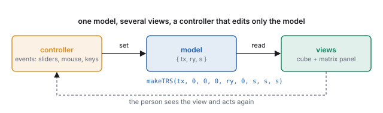
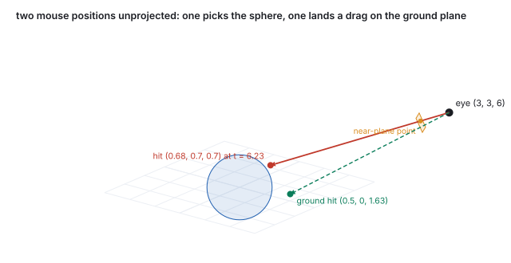
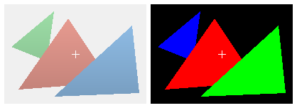
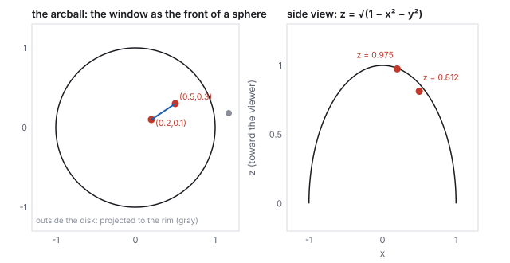
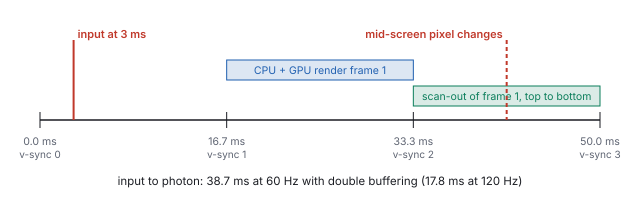

This chapter links to the course’s interactive demos and uses MathJax for its
formulas. Read it through the course website (or download the file and open it in a
browser); a Canvas inline preview will reach neither the demos nor the math.
All chapters.
CSS 551 · Advanced 3D Computer Graphics · course text
Course text · how a person gets into the loop: the event-driven frame loop, the model–view–controller separation the course’s demos are built on, the path from a mouse position back into the world by unprojection, picking by ray and by ID buffer, dragging on a plane, rotating with an arcball or an orbit, and the latency between a click and the photon. Not tied to a lecture; pairs with every demo on the course site.
A renderer draws a frame. An interactive system draws a frame, waits for the person, and draws the next one differently. This chapter is about the second half. It starts with the loop and the discipline that keeps it sane, model–view–controller, illustrated by the course’s own transform demo, whose three numbers drive a cube and a matrix panel in lockstep. It then runs the viewing pipeline backward: a mouse position is a pixel, a pixel is a point in normalized device coordinates, and the inverse of the projection and view matrices turns it into a ray, worked on the same camera and pixel as the ray-tracing chapter so the two constructions can be checked against each other to four digits. That ray picks objects, or a rendered ID buffer does it in one read; it lands a dragged object on the ground plane; and two of them turn a mouse drag into a rotation by Shoemake’s arcball, worked to the quaternion. The chapter ends with time: how many milliseconds pass between the click and the pixel, and why.
The frame loop of the rasterization chapter ran on a timer:
read input, update, render, present, sixty times a second. An interactive application has two
variants of it. The continuous loop renders every frame whether or not anything changed,
which a game needs because something always changes. The on-demand loop renders only when
an event has changed the state: the course’s demos are built this way, and an idle demo draws
nothing and uses no GPU, which is why a page with a dozen of them stays responsive. The two agree on
the structure: an event (mouse, key, wheel, slider, timer, network) arrives, a handler edits
the state, and a render is requested. What no correct program does is draw in the event
handler: the handler changes state and asks for a frame, and the frame reads the state. Simulation
that must advance in real time runs on a fixed timestep inside the loop, as
the animation chapter describes, independent of how often
frames are drawn.
2 · Model, view, controller
Definition (MVC)
The model is the application’s state, the only thing that changes. A view is
a function from the model to something visible; it owns no state of its own. A controller
translates events into edits of the model and never touches a view. Several views may show one
model; a change to the model reaches all of them because they read it, not because anyone tells them.

The loop as the course’s transform demo implements it. The model is three numbers; both views rebuild from them.
The course’s transform demo is the pattern in its smallest form. Its model is
\(\{t_x, r_y, s\}\), a translation, a rotation about \(y\) and a scale. Its controller is three
sliders, each of which writes one number and requests a render. Its two views both read the same
matrix, \(T(t_x, 0, 0)\,R_y(r_y)\,S(s, s, s)\), built by the TRS routine of
the affine chapter: one view sets it as a cube’s
transform, with the library’s automatic matrix update switched off so the model is the only
source; the other prints its sixteen entries. They cannot disagree, because neither stores anything.
Every other demo on the site is the same shape with a different model: an azimuth and elevation, a
light position and shininess, a texture offset and tile count.
See it liveOne model, two views:
drag any slider and watch the cube and the matrix change together.
The discipline pays off at exactly the moments it feels like overhead. Undo is a stack of past models.
Saving is serializing the model. A network-synchronized scene is a model replicated between machines.
A test is a model and an expected view. A view that keeps its own copy of the state breaks every one
of these, and a controller that draws breaks the loop.
3 · From the mouse to the world: unprojection
A mouse event delivers a pixel. Everything the application wants to do with it, pick an object, drag
it, aim, needs a point or a ray in the world, and that is the viewing
chain run backward. Pixel to normalized device coordinates is the viewport transform inverted:
\(s_x = 2(p_x + \tfrac12)/W - 1\), \(s_y = 1 - 2(p_y + \tfrac12)/H\). NDC to world is the inverse of
the projection and view matrices, applied to two points with the same \((s_x, s_y)\) and
\(z = -1\) and \(z = +1\), the near and far planes, followed by the perspective divide: the two world
points span the ray.
Worked example (the ray-tracing chapter’s pixel, by matrices)
The illumination demo’s camera at \((3, 3, 6)\) looking at the origin, field of view \(28^\circ\),
near 1, far 20, a \(150\times150\) image, and the pixel \((89, 62)\) of the marked point:
\((s_x, s_y) = (0.1933, 0.1667)\). Multiplying \((0.1933, 0.1667, -1, 1)\) by \((PV)^{-1}\) and
dividing by \(w\) gives the near point \((2.627, 2.630, 5.147)\), at distance 1.002 from the eye; with
\(z = +1\), the far point \((-4.454, -4.406, -11.065)\), at distance 20.04. Their difference normalized
is \((-0.372, -0.370, -0.852)\), the same direction to four digits as the ray built directly from the
camera basis in the ray-tracing chapter. The matrix route needs
no knowledge of the camera’s construction, only its two matrices, which is why it is what
libraries implement; the basis route is what it computes. Along that ray the sphere of radius 1.2 is
hit at \(t = 6.228\), at \((0.683, 0.698, 0.697)\): the click picks the marked point.

Two mouse positions unprojected from the same camera: one ray hits the sphere, the other is intersected with the ground plane to place a dragged object.
4 · Picking: by ray, and by ID buffer
Ray picking intersects the unprojected ray with the scene and takes the nearest hit,
exactly the ray-tracing chapter’s search with one ray: bounding volumes first
(the hierarchy), then triangles, in world space or, more
cheaply, with the ray transformed into each object’s local frame by its inverse model matrix so
that the object’s own bounding box applies. It runs on the CPU, needs the geometry in memory,
and returns the hit point and triangle as well as the object, which a modeling tool needs. It is
what three.js’s raycaster and every physics engine’s ray query do.
ID-buffer picking (the item buffer of Weghorst, Hooper and Greenberg,
1984) renders the scene once more with every object drawn in a flat, unique color equal to its
identifier, and reads back the single pixel under the mouse. The GPU does the search; the result
is exact to the pixel including every occlusion and every alpha-tested edge; and the cost is one
extra render and one readback, which stalls the pipeline for a frame if done synchronously. It returns
an object, not a point.

A shaded frame and its ID buffer, rendered by the chapter’s edge-function rasterizer with depth. The marked pixel reads \((255, 0, 0)\) in the ID buffer: object 1, the red triangle, which is in front of the blue one there.
Worked example (reading the buffer)
Three triangles at depths 2, 1 and 3 (object 2 nearest). At pixel \((100, 70)\) the depth test leaves
object 1, so the ID buffer holds its color \((255, 0, 0)\); the readback decodes it as identifier 1.
With 8 bits per channel the encoding \(\text{id} = r + 256g + 65536b\) distinguishes 16.7 million
objects, and a second render target can carry the triangle index or the depth for a point.
5 · Dragging: constraining the ray
A mouse position is two numbers and a world position is three; dragging an object needs a third
constraint, and the usual ones are a plane or an axis. Dragging on the ground plane intersects the
unprojected ray with \(y = 0\): \(t = -o_y/d_y\), and the object goes to \(\mathbf{o} + t\mathbf{d}\).
Dragging along an axis takes the point of the axis nearest the ray. A manipulator gizmo is three
axes and three planes drawn as handles, each a constraint the person picks by clicking it (Section 4)
before dragging. A vertex of the mesh-grid demo, lifted by a slider there, would be dragged in a
modeling tool along the camera’s up axis or on a plane facing the camera, and the normals
recomputed as the meshes chapter describes.
Worked example (landing on the ground)
Pixel \((60, 110)\) of the same camera: \((s_x, s_y) = (-0.1933, -0.4733)\), ray direction
\((-0.426, -0.512, -0.746)\). The ray leaves the eye at height 3 and descends at \(0.512\) per unit, so
it reaches \(y = 0\) at \(t = 3/0.512 = 5.861\), at \((0.501, 0, 1.629)\): the object is placed there,
and as the mouse moves the intersection slides along the plane. A ray pointing above the horizon
has \(d_y \ge 0\) and never reaches the plane; a robust tool clamps the drag at the last valid point
rather than sending the object to infinity.
6 · Rotating with the mouse: arcball and orbit
Two numbers must also become a rotation, which has three degrees of freedom. Shoemake’s
arcball (1992) makes the window the front of a sphere: a mouse position \((x, y)\) in
\([-1, 1]^2\) is lifted to the sphere point \((x, y, \sqrt{1 - x^2 - y^2})\), or to the rim when it
falls outside the disk, and a drag from \(\mathbf{p}_1\) to \(\mathbf{p}_2\) is the rotation that carries
one to the other: axis \(\mathbf{p}_1\times\mathbf{p}_2\), angle \(\arccos(\mathbf{p}_1\cdot\mathbf{p}_2)\), the
axis-angle form of the rotation chapter. The rotation is
composed with the object’s current one, and a drag around the rim rolls about the view axis,
which no pair of sliders can do.

The arcball. A drag inside the disk is a rotation about an axis in the window plane; a drag along the rim is a roll.
Worked example (one drag)
Mouse from \((0.2, 0.1)\) to \((0.5, 0.3)\). Lifted: \(\mathbf{p}_1 = (0.2, 0.1, 0.975)\),
\(\mathbf{p}_2 = (0.5, 0.3, 0.812)\). The axis is \(\mathrm{normalize}(\mathbf{p}_1\times\mathbf{p}_2) =
(-0.545, 0.838, 0.026)\), nearly in the window plane, perpendicular to the drag; the angle is
\(\arccos(0.2\cdot0.5 + 0.1\cdot0.3 + 0.975\cdot0.812) = 22.8^\circ\); the quaternion is
\((-0.108, 0.166, 0.005, 0.980)\). A position outside the disk, \((1.3, 0.2)\), lifts to the rim point
\((0.988, 0.152, 0)\), so the mapping is continuous across the edge and a drag that leaves the disk keeps
working as a roll.
The course’s demos use the simpler orbit controller, which is
the viewing chapter’s azimuth and elevation driven by the
mouse: a horizontal drag changes the yaw by \(0.4^\circ\) per pixel, so a 90-pixel drag is
\(36^\circ\); a vertical drag changes the pitch, clamped short of the poles; a wheel notch
multiplies the distance by 1.12 (five notches out, 1.76; five in, 0.53), so that zooming feels
the same at every distance. An orbit cannot roll and never lets the horizon tilt, which is the
behavior wanted for inspecting an object; the arcball is the behavior wanted for turning one in the
hand. Both are controllers in the sense of Section 2: they edit the camera’s model and request a
frame.
7 · Latency
Responsiveness is a number: the time from an input to the photon that shows its effect. It is
longer than a frame. An input arriving just after a frame started is read at the next frame start;
that frame is rendered during the following interval and presented at the vertical sync after; and
the display then scans the frame out over one more interval, top row first, so a pixel halfway
down the screen changes half a frame after the swap.

Input to photon at 60 Hz with double buffering: 38.7 ms in the worked case, about two and a half frames.
Worked example (the budget)
At 60 Hz a frame is 16.7 ms. An input at 3 ms waits 13.7 ms for the next frame start, 16.7 ms for
that frame to render and reach the swap, and 8.3 ms for scan-out to reach mid-screen: 38.7 ms. At
120 Hz every term halves, 17.8 ms. Triple buffering, which lets the GPU run a frame ahead, adds one
full frame, 16.7 ms, in exchange for smoother throughput; games that care about latency disable it,
and some read input again just before rendering to cut the first term. Below about 20 ms a pointer
feels attached to the hand; at 40 it feels like dragging something through water; virtual-reality
head tracking needs under 20 ms end to end and reprojects the last frame to the newest head pose
just before scan-out to get there.
Papers
I. Sutherland, “Sketchpad: A Man-Machine Graphical Communication System,” AFIPS Spring
Joint Computer Conference, 1963. H. Weghorst, G. Hooper and D. Greenberg, “Improved Computational
Methods for Ray Tracing,” ACM Transactions on Graphics 3(1), 1984 (the item buffer). G. Krasner
and S. Pope, “A Cookbook for Using the Model-View-Controller User Interface Paradigm in
Smalltalk-80,” Journal of Object-Oriented Programming 1(3), 1988. K. Shoemake, “ARCBALL: A
User Interface for Specifying Three-Dimensional Orientation Using a Mouse,” Graphics Interface
1992.
8 · Exercises
Exercise 1 (NDC)
On a \(1920\times1080\) window, what are the normalized device coordinates of the pixel \((960, 270)\)?
Solution
\(s_x = 2(960.5)/1920 - 1 = 0.0005\), \(s_y = 1 - 2(270.5)/1080 = 0.499\): the center column, a quarter of the way down, which is halfway up in NDC.
Exercise 2 (unprojection)
Why are two points needed to unproject a ray, and what goes wrong if the far plane is at infinity?
Solution
A pixel is a line, not a point; two depths give two points on it. With the far plane at infinity the \(z = +1\) point has \(w = 0\) after the inverse projection and cannot be divided; use \(z = 0\) (or any finite depth) for the second point, or take the near point and the direction from the eye through it.
Exercise 3 (picking)
A scene of 5,000 objects, each a mesh of thousands of triangles. Which picking method, and why? What if the tool must know which triangle was hit?
Solution
ID buffer: one render, one readback, exact regardless of triangle count, no acceleration structure to maintain. If the triangle is needed, ray picking against the one object the ID buffer named, so the expensive search runs on a single mesh.
Exercise 4 (a plane drag)
With the camera of Section 3, the mouse ray direction is \((-0.30, 0.10, -0.95)\). Where does a ground-plane drag land?
Solution
\(d_y = 0.10 > 0\): the ray climbs from height 3 and never meets \(y = 0\). The drag has left the plane; the tool keeps the object at its last valid position.
Exercise 5 (arcball)
A drag from \((0, 0)\) to \((0, 0.5)\). Axis, angle, and what the object does.
Solution
\(\mathbf{p}_1 = (0, 0, 1)\), \(\mathbf{p}_2 = (0, 0.5, 0.866)\); axis \(\mathbf{p}_1\times\mathbf{p}_2 = (-0.5, 0, 0)\), normalized \((-1, 0, 0)\); angle \(\arccos 0.866 = 30^\circ\). The object tips about the horizontal axis, its top coming toward the viewer, as if the sphere under the mouse had been rolled upward.
Exercise 6 (latency)
A renderer takes 25 ms per frame on a 60 Hz display with v-sync. What frame rate does the person see, and what is the input-to-photon time for an input just after a frame starts?
Solution
A 25 ms frame misses every other sync, so frames present every 33.3 ms: 30 frames per second. The input waits 16.7 ms for the next frame start (the loop still ticks at 60 Hz, but the frame it starts takes 25 ms), 33.3 ms to the sync it can make, and 8.3 ms of scan-out: about 58 ms. Missing v-sync doubles the visible interval and adds a frame of latency, which is why a game targets a frame time comfortably under the refresh period.